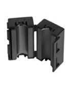
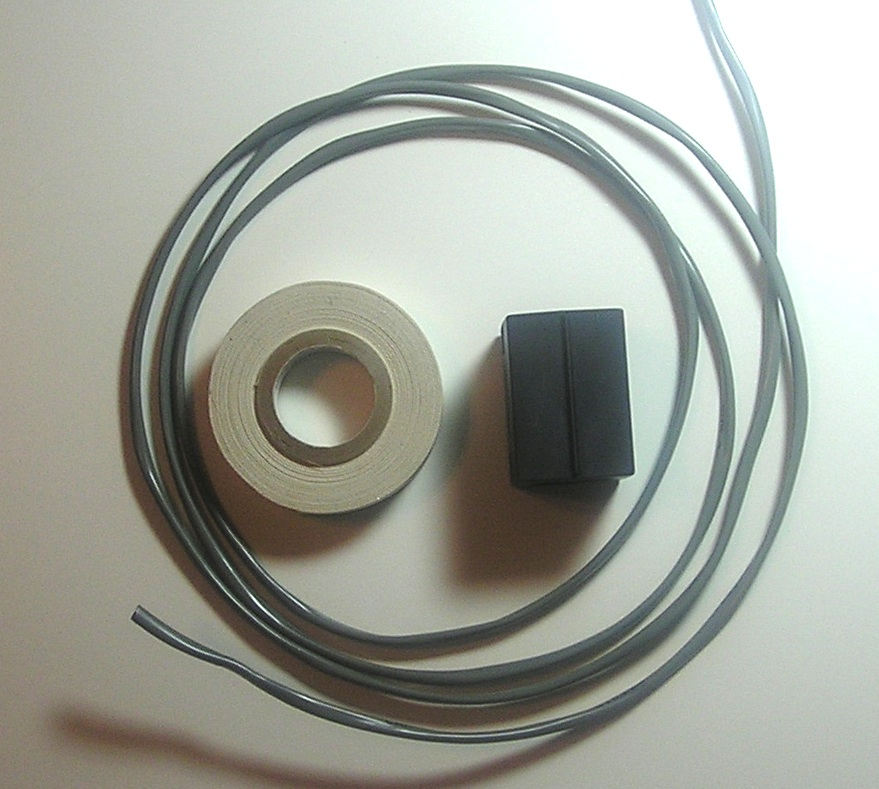
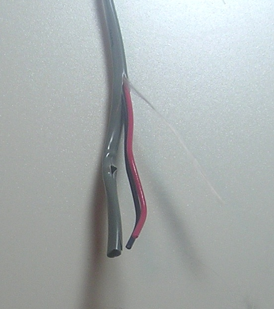
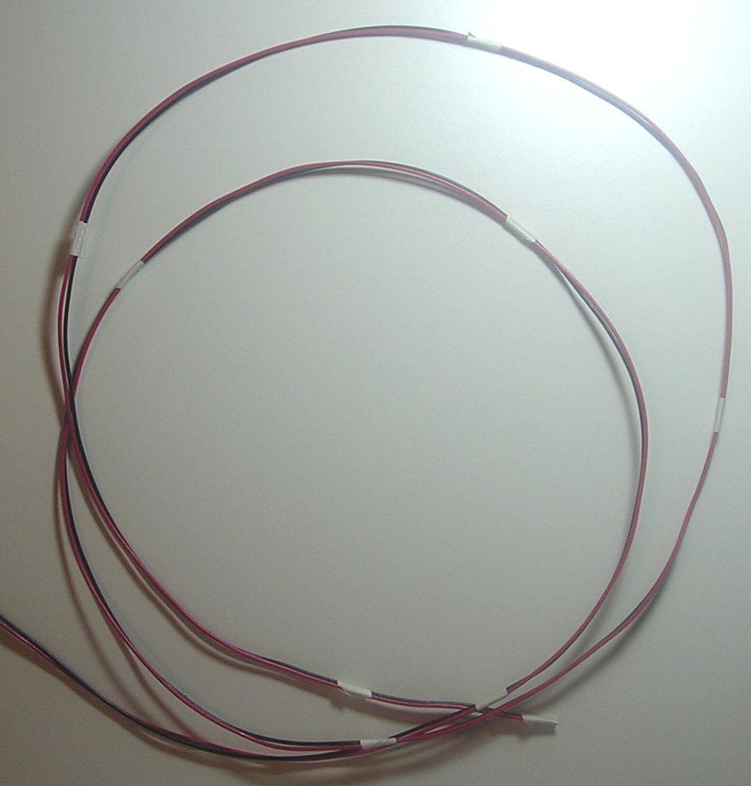
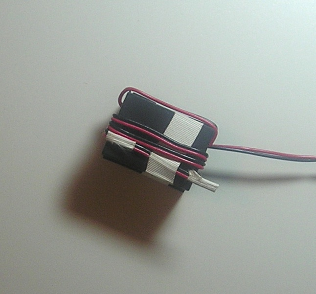
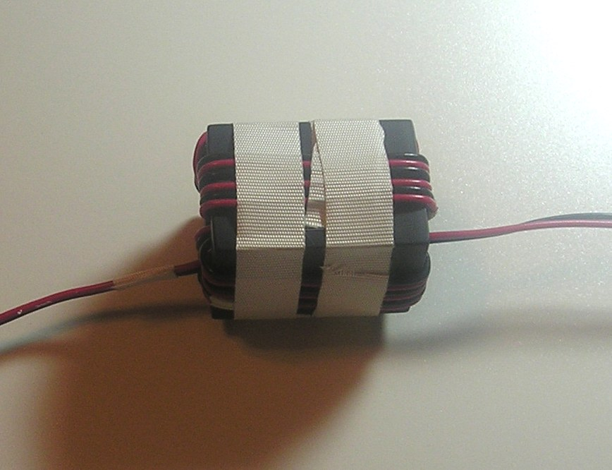
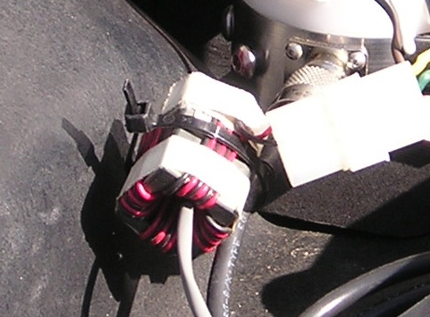
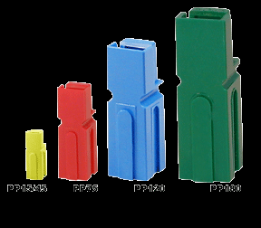
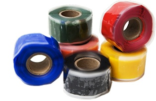

Basics
Remotely controlled HF mobile antennas are the most popular style of mobile antenna, and for good reason: the ability to change operating frequency while underway is an obvious and compelling attribute. No matter the controller type — TurboTuner-2, MFJ, TargetTuner, or a manual unit — every controller requires one common component: a motor lead RF choke. If the controller requires a turn counter (reed switch), those leads must also be separately RF choked.
The reason they need to be choked is straightforward. The motor and reed switch are mounted inside the antenna. Depending on the antenna's design, the applied RF voltage at 100 watts of driving power is typically around 200 volts, but may in fact exceed 1,000 volts. That level of RF will destroy any antenna controller — even a manual one. Even if it doesn't destroy it outright, erratic operation and RFI issues will abound. The solution is a properly wound RF choke.
Everything between the choke and the antenna radiates. This fact dictates that any choke must be installed outside the vehicle. If you mount chokes inside the vehicle, you will be plagued with erratic controller operation and RFI problems. No exceptions. See the Common Mode Currents article and the Antenna Controllers article for context on why this matters.
As pointed out in the Antenna Controllers article, the choke must be properly wound with the correct ferrite material. For motor lead chokes, that material is Mix 31 in the form of a 3/4-inch ID split bead. A correctly wound choke using these materials will produce a mostly resistive impedance of approximately 10 kΩ at 10 MHz — adequate in most cases except for some sloppily installed, short-stubby antennas.
Materials
You need three things, and none of them have acceptable substitutes.
The Bead: Mix 31, 3/4-inch ID Split Bead

Cheap split beads from Radio Shack, All Electronics, and most surplus sources will not work. Neither will the tiny Mix 43 toroids sometimes supplied by antenna manufacturers. You need Mix 31. Not Mix 43. Not "ferrite." Not "RF choke beads." Mix 31, 3/4-inch ID, split bead. DX Engineering sells them in kits of five.
The Wire: 18x2, 7x32 Strand, Nylon-Insulated Security Wire

Do not use solid wire. The recommended wire is Carol Cable Division E1032S.18.10 or equivalent. This is 18x2, 7x32 strand, nylon-insulated wire with a conductor diameter (including insulation) of 0.068 inches, enclosed in a gray or brown vinyl outer sheath with a fiberglass pull string. Home Depot, Lowe's, and others carry this wire.
The 0.068-inch outside diameter is critical. If the wire is any larger in diameter, you will not be able to get 13 turns through the bead. If you only get 5 to 8 turns, you used the wrong wire. The outside diameter is a hard limit.
You'll need about 60 inches of wire. It actually takes about 50 inches to wind the choke, but the extra length aids in the winding process. While you're at it, buy enough to run from the controller to the antenna — the outer sheath is tough and exactly what you need in a mobile installation.
The Tape: 3M #27 Fiberglass Tape, 1/2-inch wide

The tape shown is 3M #27 fiberglass tape, 1/2-inch wide. It is available from Amidon and most Ace Hardware stores. You can use electrical tape in a pinch, but #27 has other useful properties — it's self-vulcanizing, becomes very difficult to remove after sun exposure, and is waterproof. It's also used for winding baluns and ununs.
If your controller uses a reed switch, those leads must have their own choke — wound separately, not together with the motor leads. Wind one choke per cable. Winding the motor leads and reed switch leads together in the same choke defeats the purpose of the choke and provides inadequate suppression for either function.
Step 1: Preparing the Wire

- Remove the outer sheath from the cable by cutting back a few inches of sheath, grabbing the fiberglass pull string, and pulling it to strip the outer sheath from the conductors. Discard the sheath and pull string.

- Untwist the conductors and lay them out parallel. Take out any kinks and make them as straight as possible. If you have a vise, clamp the wires on one end and pull them through a shop rag.

- Cut 5 or 6 pieces of #27 tape, each about 1/2 inch long, and apply them to the straightened wires approximately every 12 inches. This maintains parallelism and prevents the conductors from twisting during winding. Also tape the ends of the wires — this aids in threading them through the split bead.
The wires must be parallel and untwisted throughout the winding process. Any twist in the wire pair inside the choke reduces the achievable impedance. The maximum impedance of approximately 10 kΩ at 10 MHz requires 13 untwisted, non-overlapping turns. Twisted or overlapping turns will fall well short of this target.
Step 2: Winding
- Tape the end of the wire to the split bead to hold it in place as you start winding.
- Thread the wire through the split bead. Work methodically — each pass through the center of the bead counts as one turn. Keep each turn flat and in order, with no overlaps and no twists.

- Continue threading the wire through the split bead until you have three turns on each side. This is a total of 13 turns through the completed choke (12 wraps outside the bead, 13 passes through the inside of the bead).
- When you get back to the starting point, carefully cut the tape holding the starting end and finish winding the last turn (number 13).
If you didn't get 13 untwisted, non-overlapped turns: start over. Do not try to fix it in place. If you only got 5 to 8 turns, you almost certainly used wire with too large an outside diameter. Remember: the wire outside diameter must be 0.068 inches. Nothing larger will fit 13 turns through a 3/4-inch ID bead.

Step 3: Finishing

- Wind two lengths of #27 tape around the choke to keep the wires in place. It is not necessary — and not advisable — to cover the entire choke with tape. Covering the whole thing traps moisture and accomplishes nothing else.
- Secure the choke with a single TyRap to keep it mechanically stable.
Connectors and Weatherproofing
Attach a quick-disconnect connector to the leads. Molex connectors work well. Some may scoff at using Molex connectors for connections exposed to the weather, but the truth is otherwise: many rubber-enclosed connectors allow water to seep in, where it stays and corrodes the contacts. Molex connectors get wet too, but they dry out quickly.
If you use Anderson Power Pole connectors, do not use black and red housings. Using any of the other available colors prevents accidentally connecting power to the reed switch, which is an all-too-common occurrence. The consequences of applying 12 volts to reed switch leads range from a destroyed reed switch to a destroyed controller.
Do not cover the connection with tape or coax seal. If the connection gets wet, let it get wet — it will dry out. If you must cover it, use Rescue Tape. It is self-vulcanizing and seals better than any electrical tape. This goes for coax connections too: no electrical tape, no coax seal. Both trap moisture and make the problem worse over time, not better.
Summary: Non-Negotiable Requirements
To reiterate the specifications that must all be met for a correctly functioning choke:
- Bead: Mix 31, 3/4-inch ID, split bead — no substitutes
- Wire: 0.068-inch OD stranded wire (18x2, 7x32 strand, nylon insulated) — solid wire will not work
- Turns: 13 turns exactly
- Parallelism: Not twisted at any point
- Overlap: No turns overlapping
- Placement: Outside the vehicle, always
- Separate chokes: Motor leads and reed switch leads wound separately
Anything less, start over.
Modern Considerations
Coax Common Mode Chokes
The same Mix 31 split bead is the correct material for winding coaxial common mode chokes. The procedure is different — you're threading coax through the bead rather than winding paired wire around it — but the bead material is the same. For coax chokes, 6 to 7 turns of RG-8X through a 3/4-inch ID Mix 31 split bead produces approximately 2.2 to 2.7 kΩ at 10 MHz. Two beads in series nearly double the impedance for installations with severe common mode problems (lip mounts, clip mounts, and magnetic-base antennas). See the Coax & PL-259s article and the Common Mode Currents article for details.
Higher-Power Installations
At 100 watts driving power, the RF voltage on motor control leads inside the antenna can reach or exceed 1,000 volts. At higher power levels, this voltage increases proportionally. If you're running an amplifier, the motor lead choke becomes even more critical — inadequate choking impedance at high power is not merely a performance problem. It can be a destructive one. A single correctly wound choke of 10 kΩ at 10 MHz provides adequate isolation for 100 watts. At 500 watts, two chokes in series is prudent engineering.
Mix 31 Availability
Mix 31 ferrite material remains available from DX Engineering, Amidon, and similar suppliers. The split bead format with 3/4-inch ID is the correct form factor for the motor lead choke procedure described here. Solid (non-split) Mix 31 toroids of the same general dimensions require threading the wire through the toroid differently and produce different turn counts for the same impedance. The split bead format described here is the established, tested approach.